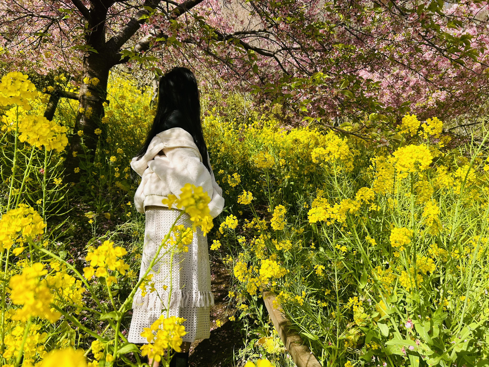

Spring at Osaka Castle is a magical experience filled with soft pink cherry blossoms gently falling through the air. As you walk around the castle grounds, thousands of sakura trees bloom at once, creating a dreamy landscape straight out of a postcard.
Petals float gracefully in the breeze, covering the paths and moats in shades of pink and white. The historic Osaka Castle standing proudly among the blossoms makes the scenery even more special, blending nature and history in perfect harmony.
Visitors relax on the grass, enjoy hanami with friends, and capture beautiful moments as petals fall like snow. The peaceful atmosphere, fresh spring air, and stunning views make Osaka Castle one of the best places in Japan to enjoy cherry blossom season. 🌸✨


